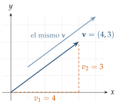
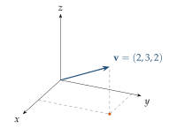
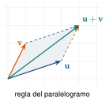
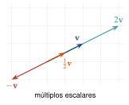
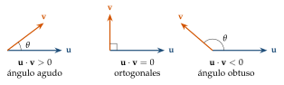
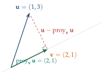
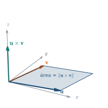
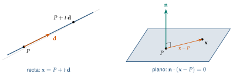
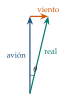

Vectores en el plano, el espacio y \(\R^n\)
- representar vectores como flechas y como listas de números;
- sumar vectores, multiplicarlos por escalares y formar combinaciones lineales;
- calcular longitudes, distancias, ángulos y proyecciones con el producto punto;
- usar el producto cruz para obtener vectores perpendiculares y áreas;
- escribir ecuaciones de rectas y planos en el espacio.
En física, una fuerza o una velocidad no quedan descritas solo con un número: importa también hacia dónde apuntan. En computación, una foto, una canción o los gustos de una persona en una plataforma de streaming se guardan como largas listas de números. Ambas ideas, la flecha y la lista, son dos caras del mismo objeto: el vector.
3.1 Conceptos
3.1.1 Escalares y vectores
Un vector de \(\R^n\) es una lista ordenada de \(n\) números reales, llamados sus componentes:
Un número real suelto se llama escalar. El conjunto de todos los vectores con \(n\) componentes se denota \(\R^n\). Dos vectores son iguales si tienen las mismas componentes, en el mismo orden.
En \(\R^2\) y \(\R^3\) dibujamos el vector \(\vv\) como una flecha que sale del origen y termina en el punto de coordenadas \((v_1,v_2)\) o \((v_1,v_2,v_3)\). Lo que importa de la flecha es su largo y su dirección, no su punto de partida: dos flechas paralelas, del mismo largo y sentido, representan el mismo vector.


Si \(P\) y \(Q\) son puntos, el vector que va de \(P\) a \(Q\) es \(\overrightarrow{PQ}=Q-P\): “punta menos cola”.
3.1.2 Suma de vectores y producto por escalar
Si \(\vu=(u_1,\dots,u_n)\), \(\vv=(v_1,\dots,v_n)\) y \(c\) es un escalar:
La resta es \(\vu-\vv=\vu+(-1)\vv\). El vector cero es \(\cero=(0,\dots,0)\).


Para vectores \(\vu,\vv,\vw\) de \(\R^n\) y escalares \(c,d\):
| \(\vu+\vv=\vv+\vu\) | \((\vu+\vv)+\vw=\vu+(\vv+\vw)\) |
| \(\vu+\cero=\vu\) | \(\vu+(-\vu)=\cero\) |
| \(c(\vu+\vv)=c\vu+c\vv\) | \((c+d)\vu=c\vu+d\vu\) |
| \(c(d\vu)=(cd)\vu\) | \(1\vu=\vu\) |
3.1.3 Combinaciones lineales
Un vector \(\vw\) es combinación lineal de \(\vv_1,\dots,\vv_k\) si existen escalares \(c_1,\dots,c_k\) tales que
Por ejemplo, \((5,4)=2(1,2)+1(3,0)\). Encontrar los coeficientes \(c_i\) equivale a resolver un sistema de ecuaciones lineales: este puente entre vectores y sistemas será central en todo el libro.
3.1.4 Norma, distancia y vectores unitarios
La norma de \(\vv=(v_1,\dots,v_n)\) es
La distancia entre los puntos \(P\) y \(Q\) es \(d(P,Q)=\norma{Q-P}\). Un vector de norma \(1\) es unitario; para obtener el vector unitario en la dirección de \(\vv\neq\cero\) se normaliza: \(\dfrac{\vv}{\norma{\vv}}\).
En \(\R^2\), la fórmula es el teorema de Pitágoras: \(\norma{(4,3)}=\sqrt{16+9}=5\). Además, \(\norma{c\vv}=\abs{c}\,\norma{\vv}\).
Calcula \(\norma{(1,-2,2)}\) y el vector unitario en su dirección.
Ver respuesta
3.1.5 El producto punto
¡El resultado es un número, no un vector!
El producto punto mide cuánto “apuntan en la misma dirección” dos vectores:
Si \(\theta\) es el ángulo entre los vectores no nulos \(\vu\) y \(\vv\) (\(0^\circ\le\theta\le180^\circ\)), entonces
En particular, \(\vu\) y \(\vv\) son ortogonales (perpendiculares) si y solo si \(\vu\cdot\vv=0\).

\(\vu\cdot\vv=\vv\cdot\vu\), \(\vu\cdot(\vv+\vw)=\vu\cdot\vv+\vu\cdot\vw\), \((c\vu)\cdot\vv=c(\vu\cdot\vv)\), \(\vv\cdot\vv=\norma{\vv}^2\ge0\).
3.1.6 Proyección ortogonal
¿Cuánto de \(\vu\) está en la dirección de \(\vv\)? La respuesta es la sombra que proyecta \(\vu\) sobre la recta de \(\vv\) cuando la luz cae perpendicularmente.
El vector \(\vu-\proy_{\vv}\vu\) es ortogonal a \(\vv\), de modo que \(\vu\) se descompone en una parte paralela y otra perpendicular a \(\vv\).

3.1.7 El producto cruz (solo en \(\R^3\))
Para \(\vu=(u_1,u_2,u_3)\) y \(\vv=(v_1,v_2,v_3)\),
- \(\vu\times\vv\) es perpendicular a \(\vu\) y a \(\vv\), con sentido dado por la regla de la mano derecha.
- \(\norma{\vu\times\vv}\) es el área del paralelogramo formado por \(\vu\) y \(\vv\) (la mitad es el área del triángulo).
- \(\vv\times\vu=-(\vu\times\vv)\) y \(\vu\times\vu=\cero\).

3.1.8 Rectas y planos en el espacio
La recta que pasa por el punto \(P\) con vector director \(\vect d\) es el conjunto de puntos
\[\vx=P+t\,\vect d,\qquad t\in\R\qquad\text{(ecuación vectorial o paramétrica).}\]El plano que pasa por \(P=(x_0,y_0,z_0)\) con vector normal \(\vect n=(a,b,c)\) (perpendicular al plano) es
\[\vect n\cdot(\vx-P)=0\quad\Longleftrightarrow\quad ax+by+cz=d,\ \ \text{con } d=\vect n\cdot P .\]

3.2 Cómo utilizar los conceptos
- Calcula \(\vu\cdot\vv\). Si da \(0\), el ángulo es \(90^\circ\) y terminaste.
- Calcula \(\norma{\vu}\) y \(\norma{\vv}\).
- Calcula \(\cos\theta=\dfrac{\vu\cdot\vv}{\norma{\vu}\norma{\vv}}\) (debe dar entre \(-1\) y \(1\); si no, hay un error).
- Obtén \(\theta=\arccos(\cos\theta)\) con la calculadora en grados.
- Calcula los números \(\vu\cdot\vv\) y \(\vv\cdot\vv\).
- Paralela: \(\vect p=\dfrac{\vu\cdot\vv}{\vv\cdot\vv}\,\vv\). Perpendicular: \(\vect q=\vu-\vect p\).
- Comprueba que \(\vect q\cdot\vv=0\).
- Forma dos vectores del plano: \(\overrightarrow{PQ}=Q-P\) y \(\overrightarrow{PR}=R-P\).
- Calcula un vector normal \(\vect n=\overrightarrow{PQ}\times\overrightarrow{PR}=(a,b,c)\).
- Calcula \(d=\vect n\cdot P\) y escribe \(ax+by+cz=d\).
- Comprueba que \(Q\) y \(R\) también cumplen la ecuación.
- Escribe las componentes de \(\vu\) y debajo las de \(\vv\), y repite las dos primeras columnas a la derecha.
Cada componente del resultado es un “producto en cruz” de \(2\times2\):
\[\begin{array}{ccccc} u_1&u_2&u_3&u_1&u_2\\ v_1&v_2&v_3&v_1&v_2\end{array} \quad\Rightarrow\quad (u_2v_3-u_3v_2,\ u_3v_1-u_1v_3,\ u_1v_2-u_2v_1).\]- Verifica que el resultado sea ortogonal a \(\vu\) y a \(\vv\) (producto punto igual a \(0\)).
- Creer que \(\norma{\vu+\vv}=\norma{\vu}+\norma{\vv}\): en general es menor o igual (desigualdad triangular).
- Confundir el producto punto (da un número) con el producto cruz (da un vector de \(\R^3\)).
- Sumar vectores de distinto tamaño, como \((1,2)+(1,2,3)\): no está definido.
- Olvidar que \(\proy_{\vv}\vu\) divide por \(\vv\cdot\vv=\norma{\vv}^2\), no por \(\norma{\vv}\).
3.3 Ejemplos resueltos
Si \(\vu=(3,1)\) y \(\vv=(1,2)\), calcula \(\vu+\vv\), \(2\vu\), \(\vu-\vv\) y \(2\vu-3\vv\).
Solución. \(\vu+\vv=(4,3)\); \(2\vu=(6,2)\); \(\vu-\vv=(2,-1)\); \(2\vu-3\vv=(6,2)-(3,6)=(3,-4)\).
Calcula la norma de \(\vv=(2,-1,2)\), su vector unitario y la distancia entre \(P=(1,2,3)\) y \(Q=(4,6,3)\).
Solución. \(\norma{\vv}=\sqrt{4+1+4}=3\), unitario \(\tfrac13\vv=(\tfrac23,-\tfrac13,\tfrac23)\). \(\ Q-P=(3,4,0)\), así que \(d(P,Q)=\sqrt{9+16+0}=5\).
Encuentra el ángulo entre \(\vu=(1,1,0)\) y \(\vv=(1,0,1)\).
Solución. \(\vu\cdot\vv=1\), \(\norma{\vu}=\norma{\vv}=\sqrt2\). Entonces \(\cos\theta=\dfrac{1}{\sqrt2\sqrt2}=\dfrac12\) y \(\theta=60^\circ\).
Descompone \(\vu=(1,3)\) en una parte paralela y otra perpendicular a \(\vv=(2,1)\).
Solución. \(\vu\cdot\vv=2+3=5\) y \(\vv\cdot\vv=5\), así que \(\proy_{\vv}\vu=\tfrac55(2,1)=(2,1)\). La parte perpendicular es \((1,3)-(2,1)=(-1,2)\). Comprobación: \((-1,2)\cdot(2,1)=0\). ✓ (Ver Figura 3.3.)
Calcula \(\vu\times\vv\) para \(\vu=(1,2,0)\), \(\vv=(0,1,3)\) y el área del triángulo que forman.
Solución.
Comprobación: \((6,-3,1)\cdot(1,2,0)=0\) y \((6,-3,1)\cdot(0,1,3)=0\). El paralelogramo tiene área \(\norma{(6,-3,1)}=\sqrt{46}\approx6.78\); el triángulo, la mitad: \(\approx3.39\).
Escribe la recta que pasa por \(A=(1,0,2)\) y \(B=(3,1,-1)\).
Solución. Vector director: \(\vect d=B-A=(2,1,-3)\). Recta: \((x,y,z)=(1,0,2)+t(2,1,-3)\), o en forma paramétrica \(x=1+2t\), \(y=t\), \(z=2-3t\). Con \(t=0\) se obtiene \(A\) y con \(t=1\), \(B\).
Encuentra el plano que pasa por \(P=(1,0,0)\), \(Q=(0,2,0)\) y \(R=(0,0,3)\).
Solución. \(\overrightarrow{PQ}=(-1,2,0)\), \(\overrightarrow{PR}=(-1,0,3)\) y \(\vect n=\overrightarrow{PQ}\times\overrightarrow{PR}=(2\cdot3-0,\ 0\cdot(-1)-(-1)\cdot3,\ 0-2\cdot(-1))=(6,3,2)\). Como \(\vect n\cdot P=6\), el plano es \(6x+3y+2z=6\). Comprobación con \(Q\): \(6\); con \(R\): \(6\). ✓
3.4 Aplicaciones en la vida real
Dos personas arrastran un mueble con cuerdas. Una tira con fuerza \(\vect F_1=(30,40)\) newtons y la otra con \(\vect F_2=(50,-10)\) N. El efecto conjunto es la suma: \(\vect R=\vect F_1+\vect F_2=(80,30)\) N, de magnitud \(\norma{\vect R}=\sqrt{80^2+30^2}\approx85.4\) N. Observa que es menor que \(50+\sqrt{2600}\approx101\) N: las fuerzas se compensan en parte porque no apuntan en la misma dirección.
En física, el trabajo que hace una fuerza \(\vect F\) al desplazar un objeto según \(\vect d\) es \(W=\vect F\cdot\vect d=\norma{\vect F}\norma{\vect d}\cos\theta\). Si empujas un carro de supermercado con 50 N en un ángulo de \(30^\circ\) bajo la horizontal y lo desplazas 20 m, el trabajo es \(W=50\cdot20\cdot\cos30^\circ\approx866\) joules. Solo la parte de la fuerza paralela al movimiento (la proyección) realiza trabajo; la parte vertical solo aprieta el carro contra el suelo.
Una plataforma de películas guarda las notas (de 0 a 5) que cada usuario dio a cuatro películas:
| Acción 1 | Acción 2 | Romance | Drama | |
|---|---|---|---|---|
| Ana | 5 | 3 | 0 | 1 |
| Beto | 4 | 2 | 0 | 1 |
| Carla | 1 | 0 | 5 | 4 |
Cada usuario es un vector de \(\R^4\). La similitud coseno \(\cos\theta=\frac{\vu\cdot\vv}{\norma{\vu}\norma{\vv}}\) vale \(1\) si los gustos son proporcionales y cerca de \(0\) si no tienen nada en común:
Así, la plataforma recomendará a Ana lo que le gustó a Beto. Con millones de usuarios y películas la idea es la misma.
Un avión vuela hacia el norte a 500 km/h respecto del aire, pero sopla un viento de 120 km/h hacia el este. Su velocidad real es la suma \((0,500)+(120,0)=(120,500)\) km/h. Su rapidez respecto del suelo es \(\norma{(120,500)}\approx514\) km/h y se desvía un ángulo \(\arctan(120/500)\approx13.5^\circ\) hacia el este. Los pilotos corrigen el rumbo justamente resolviendo este problema al revés.

Las superficies de los modelos 3D están formadas por miles de triángulos. Para decidir qué tan iluminado se ve cada triángulo, el computador calcula su vector normal con un producto cruz y lo compara con la dirección de la luz mediante el coseno del ángulo. Para el triángulo de vértices \((0,0,0)\), \((2,0,0)\), \((0,2,1)\): \(\vect n=(2,0,0)\times(0,2,1)=(0,-2,4)\). Con luz cayendo desde arriba, \(\vect L=(0,0,1)\):
así que el triángulo se pinta con el 89 % de la intensidad máxima. Las tarjetas gráficas hacen miles de millones de estos cálculos por segundo.
3.5 Ejercicios de práctica
- 3.1Si \(\vu=(2,-1)\) y \(\vv=(-3,4)\), calcula: a) \(\vu+\vv\) b) \(3\vu\) c) \(2\vu-\vv\) d) \(\norma{\vv}\).Ver solución
- 3.2Encuentra el vector \(\overrightarrow{PQ}\) si \(P=(1,-2,4)\) y \(Q=(3,1,0)\), y la distancia entre \(P\) y \(Q\).Ver solución
- 3.3Encuentra el vector unitario en la dirección de: a) \((6,-8)\) b) \((1,2,2)\).Ver solución
- 3.4Calcula: a) \((1,2,3)\cdot(4,-5,6)\) b) \((2,-1)\cdot(3,6)\) c) \((1,0,-1,2)\cdot(3,4,1,1)\).Ver solución
- 3.5¿Son ortogonales? a) \((3,-2)\) y \((4,6)\) b) \((1,1,1)\) y \((2,-1,-1)\) c) \((1,2,3)\) y \((3,2,1)\).Ver solución
- 3.6Encuentra \(k\) para que \((k,3)\) sea ortogonal a \((2,-4)\).Ver solución
- 3.7Calcula el ángulo entre: a) \((1,2,2)\) y \((2,-2,1)\) b) \((3,0)\) y \((2,2)\) c) \((1,1,0)\) y \((-1,0,1)\).Ver solución
- 3.8a) Calcula \(\proy_{\vv}\vu\) para \(\vu=(3,4)\), \(\vv=(1,0)\). b) Descompone \(\vu=(2,1,3)\) en una parte paralela y otra perpendicular a \(\vv=(1,1,1)\).Ver solución
- 3.9Calcula y verifica la ortogonalidad del resultado: a) \((1,0,0)\times(0,1,0)\) b) \((2,1,-1)\times(1,3,2)\).Ver solución
- 3.10Calcula el área del triángulo de vértices \(A=(1,0,0)\), \(B=(0,1,0)\) y \(C=(0,0,1)\).Ver solución
- 3.11Escribe la recta que pasa por \((2,-1,3)\) con dirección \((1,4,-2)\). ¿Está el punto \((4,7,-1)\) en ella?Ver solución
- 3.12Escribe la ecuación del plano que pasa por \((1,2,-1)\) y tiene vector normal \((2,-1,3)\).Ver solución
- 3.13Encuentra la ecuación del plano que pasa por \((1,1,1)\), \((2,0,1)\) y \((1,2,3)\).Ver solución
- 3.14Escribe \((5,4)\) como combinación lineal de \((1,2)\) y \((3,0)\).Ver solución
- 3.15Sobre un objeto actúan las fuerzas \(\vect F_1=(10,0)\) N y \(\vect F_2=(-4,8)\) N. ¿Qué fuerza \(\vect F_3\) hay que agregar para que el objeto quede en equilibrio (fuerza total cero)? ¿Cuál es su magnitud?Ver solución
- 3.16Una fuerza constante \(\vect F=(20,15)\) N mueve un objeto desde \(A=(0,0)\) hasta \(B=(8,-2)\) (en metros). Calcula el trabajo realizado.Ver solución
- 3.17Tres documentos se representan contando cuántas veces aparecen las palabras (vector, partido, matriz, equipo, gol): \(\vect d_1=(3,0,2,1,0)\), \(\vect d_2=(2,1,2,0,0)\), \(\vect d_3=(0,4,0,1,3)\). Calcula la similitud coseno de cada par. ¿Cuáles dos documentos tratan del mismo tema?Ver solución
- 3.18Un bote cruza un río de 1.2 km de ancho. El motor lo impulsa a 12 km/h perpendicular a la orilla y la corriente lo arrastra a 5 km/h río abajo. ¿Cuál es la rapidez real del bote? ¿Cuánto tarda en cruzar y cuántos metros río abajo llega?Ver solución
- 3.19En un programa de animación, un triángulo tiene vértices \((0,0,0)\), \((1,0,0)\) y \((0,1,1)\). Calcula un vector normal y el porcentaje de iluminación si la luz cae en la dirección \((0,0,1)\).Ver solución
- 3.20Desafío. Usando las propiedades del producto punto, demuestra que \(\norma{\vu+\vv}^2=\norma{\vu}^2+2\,\vu\cdot\vv+\norma{\vv}^2\). ¿Qué teorema famoso obtienes si \(\vu\) y \(\vv\) son ortogonales?Ver solución
3.6 Solucionario
3.1 Solución del ejercicio 3.1
a) \((-1,3)\) b) \((6,-3)\) c) \((4,-2)-(-3,4)=(7,-6)\) d) \(\sqrt{9+16}=5\).↑ volver al enunciado3.2 Solución del ejercicio 3.2
\(\overrightarrow{PQ}=(2,3,-4)\); distancia \(\sqrt{4+9+16}=\sqrt{29}\approx5.39\).↑ volver al enunciado3.3 Solución del ejercicio 3.3
a) \(\norma{(6,-8)}=10\): \((\tfrac35,-\tfrac45)\). b) \(\norma{(1,2,2)}=3\): \((\tfrac13,\tfrac23,\tfrac23)\).↑ volver al enunciado3.4 Solución del ejercicio 3.4
a) \(4-10+18=12\) b) \(6-6=0\) c) \(3+0-1+2=4\).↑ volver al enunciado3.5 Solución del ejercicio 3.5
a) \(12-12=0\): sí. b) \(2-1-1=0\): sí. c) \(3+4+3=10\): no.↑ volver al enunciado3.6 Solución del ejercicio 3.6
\(2k-12=0\Rightarrow k=6\).↑ volver al enunciado3.7 Solución del ejercicio 3.7
a) Producto punto \(2-4+2=0\): \(90^\circ\). b) \(\cos\theta=\frac{6}{3\cdot2\sqrt2}=\frac{1}{\sqrt2}\): \(45^\circ\). c) \(\cos\theta=\frac{-1}{\sqrt2\sqrt2}=-\frac12\): \(120^\circ\).↑ volver al enunciado3.8 Solución del ejercicio 3.8
a) \(\frac{3}{1}(1,0)=(3,0)\). b) \(\vu\cdot\vv=6\), \(\vv\cdot\vv=3\): paralela \((2,2,2)\); perpendicular \((0,-1,1)\) (y en efecto \((0,-1,1)\cdot(1,1,1)=0\)).↑ volver al enunciado3.9 Solución del ejercicio 3.9
a) \((0,0,1)\). b) \((1\cdot2-(-1)\cdot3,\ (-1)\cdot1-2\cdot2,\ 2\cdot3-1\cdot1)=(5,-5,5)\); se verifica \((5,-5,5)\cdot(2,1,-1)=0\) y \((5,-5,5)\cdot(1,3,2)=0\).↑ volver al enunciado3.10 Solución del ejercicio 3.10
\(\overrightarrow{AB}=(-1,1,0)\), \(\overrightarrow{AC}=(-1,0,1)\), producto cruz \((1,1,1)\). Área \(=\tfrac12\sqrt3\approx0.87\).↑ volver al enunciado3.11 Solución del ejercicio 3.11
\((x,y,z)=(2,-1,3)+t(1,4,-2)\). Con \(t=2\): \((4,7,-1)\). Sí está en la recta.↑ volver al enunciado3.12 Solución del ejercicio 3.12
\(2(x-1)-(y-2)+3(z+1)=0\), o sea \(2x-y+3z=-3\).↑ volver al enunciado3.13 Solución del ejercicio 3.13
\(\vect n=(1,-1,0)\times(0,1,2)=(-2,-2,1)\); \(\vect n\cdot(1,1,1)=-3\). Plano \(-2x-2y+z=-3\), es decir \(2x+2y-z=3\).↑ volver al enunciado3.14 Solución del ejercicio 3.14
\(a(1,2)+b(3,0)=(5,4)\): \(2a=4\Rightarrow a=2\); \(a+3b=5\Rightarrow b=1\). Así \((5,4)=2(1,2)+1(3,0)\).↑ volver al enunciado3.15 Solución del ejercicio 3.15
\(\vect F_1+\vect F_2=(6,8)\), luego \(\vect F_3=(-6,-8)\) N, de magnitud \(10\) N.↑ volver al enunciado3.16 Solución del ejercicio 3.16
\(\vect d=B-A=(8,-2)\); \(W=\vect F\cdot\vect d=160-30=130\) J.↑ volver al enunciado3.17 Solución del ejercicio 3.17
\(\cos(\vect d_1,\vect d_2)\approx0.89\), \(\cos(\vect d_1,\vect d_3)\approx0.05\), \(\cos(\vect d_2,\vect d_3)\approx0.26\). \(\vect d_1\) y \(\vect d_2\) tratan del mismo tema (álgebra); \(\vect d_3\) es de fútbol.↑ volver al enunciado3.18 Solución del ejercicio 3.18
Velocidad \((12,-5)\), rapidez \(\sqrt{144+25}=13\) km/h. Tiempo \(1.2/12=0.1\) h \(=6\) min (solo cuenta la componente perpendicular a la orilla). Deriva: \(5\cdot0.1=0.5\) km \(=500\) m río abajo.↑ volver al enunciado3.19 Solución del ejercicio 3.19
\(\vect n=(1,0,0)\times(0,1,1)=(0,-1,1)\); \(\cos\theta=\frac{1}{\sqrt2}\approx0.71\): un 71 % de iluminación.↑ volver al enunciado3.20 Solución del ejercicio 3.20
\(\norma{\vu+\vv}^2=(\vu+\vv)\cdot(\vu+\vv)=\vu\cdot\vu+\vu\cdot\vv+\vv\cdot\vu+\vv\cdot\vv=\norma{\vu}^2+2\vu\cdot\vv+\norma{\vv}^2\). Si \(\vu\cdot\vv=0\) queda \(\norma{\vu+\vv}^2=\norma{\vu}^2+\norma{\vv}^2\): el teorema de Pitágoras.↑ volver al enunciado
¿Terminaste de estudiar este capítulo?